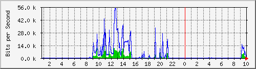
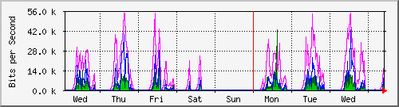
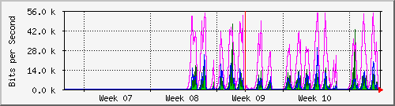
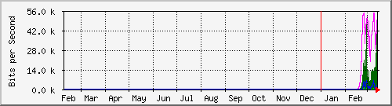

| Description : Serial5/1/3 | 56kbps connected |
| 마지막 수정 2001년 3월 15일 10시 00분 |
일일 Graph (5 Minute Average)

| 최대 In: | 12.9 kb/s (23.0%) | 평균 In: | 968.0 b/s (1.7%) | 현재 In: | 128.0 b/s (0.2%) | ||
| 최대 Out: | 54.6 kb/s (97.5%) | 평균 Out: | 3872.0 b/s (6.9%) | 현재 Out: | 200.0 b/s (0.4%) |
일주일 Graph (30 Minute Average)

| 최대 In: | 43.3 kb/s (77.3%) | 평균 In: | 904.0 b/s (1.6%) | 현재 In: | 2000.0 b/s (3.6%) | ||
| 최대 Out: | 54.7 kb/s (97.6%) | 평균 Out: | 2936.0 b/s (5.2%) | 현재 Out: | 5352.0 b/s (9.6%) |
한달 Graph (2 Hour Average)

| 최대 In: | 47.5 kb/s (84.9%) | 평균 In: | 856.0 b/s (1.5%) | 현재 In: | 32.0 b/s (0.1%) | ||
| 최대 Out: | 54.7 kb/s (97.6%) | 평균 Out: | 2904.0 b/s (5.2%) | 현재 Out: | 88.0 b/s (0.2%) |
년간 Graph (1 Day Average)

| 최대 In: | 47.5 kb/s (84.9%) | 평균 In: | 808.0 b/s (1.4%) | 현재 In: | 1112.0 b/s (2.0%) | ||
| 최대 Out: | 54.7 kb/s (97.6%) | 평균 Out: | 2696.0 b/s (4.8%) | 현재 Out: | 3472.0 b/s (6.2%) |
| GREEN ### | 유입유통량(단위 : Bits / Second) |
| BLUE ### | 유출유통량(단위 : Bits / Second) |
| DARK GREEN### | 5분 단위 유입량중 최대치 |
| MAGENTA### | 5분 단위 유출량중 최대치 |
| version 2.9.10 | Tobias Oetiker <oetiker@ee.ethz.ch> and Dave Rand <dlr@bungi.com> |